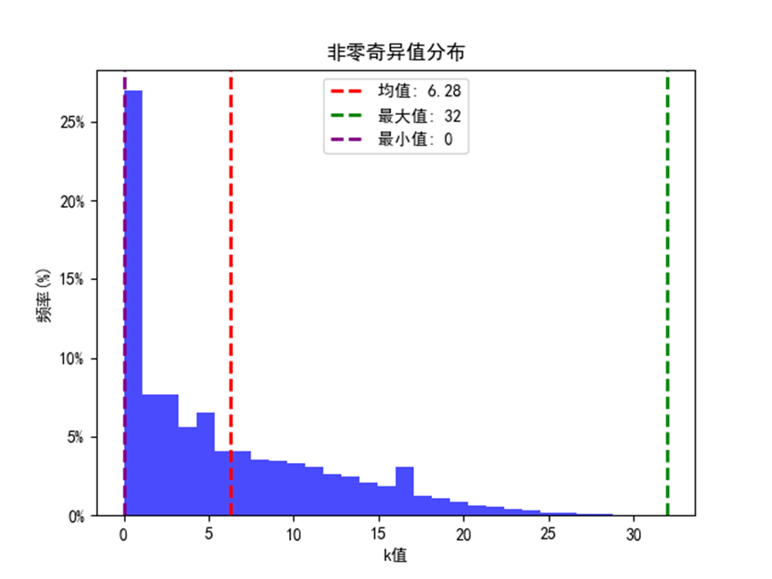
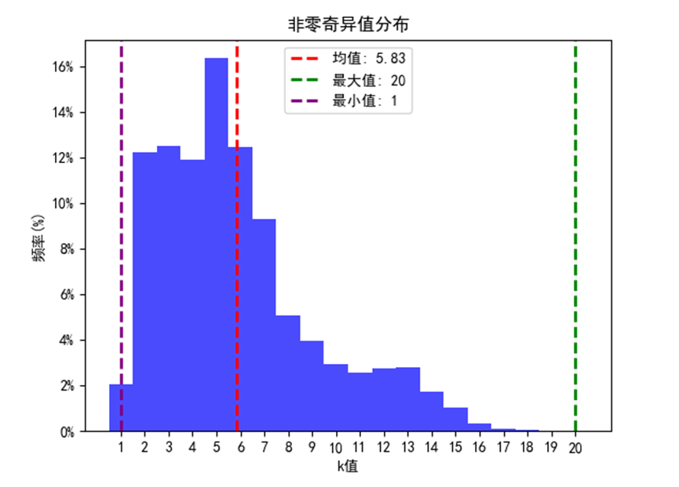
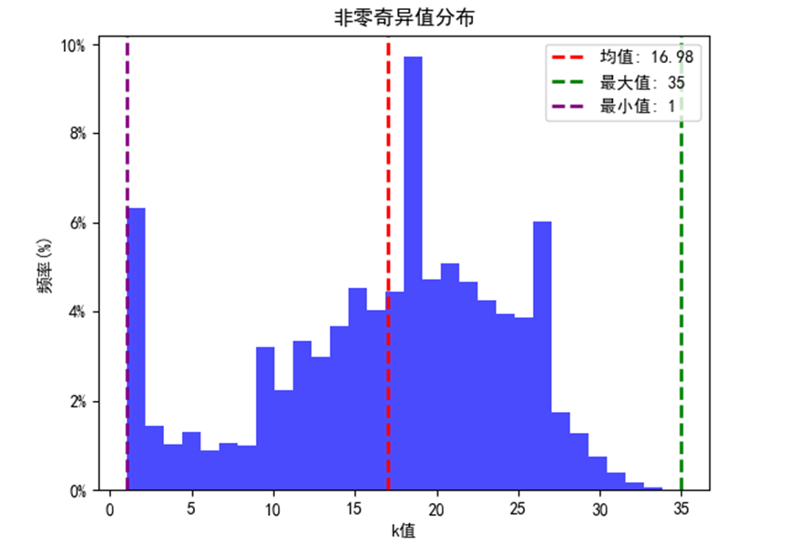
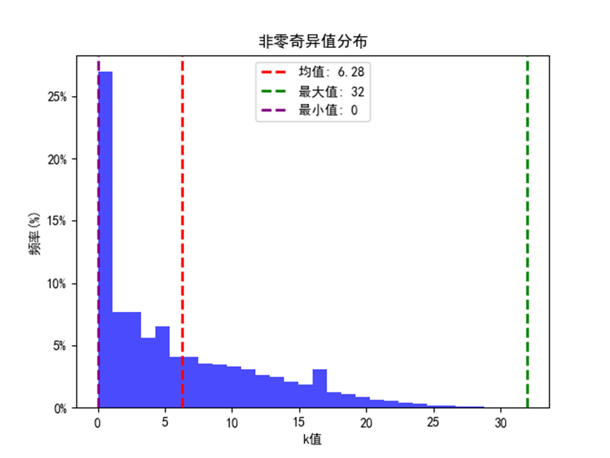
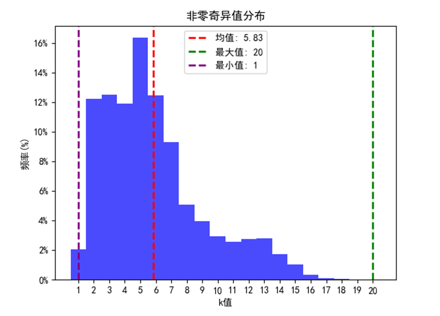
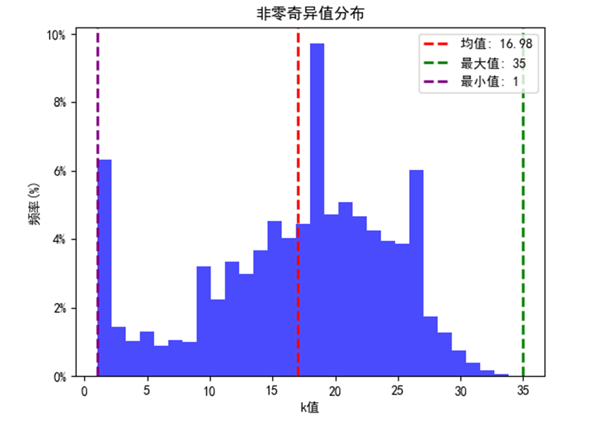

基于SVD的版图特征提取与压缩
数据集中的整体效果
ICCAD-2012非零奇异值数量分布（1200*1200版图规格）
ICCAD-2016非零奇异值数量分布（512*512版图规格）
ICCAD-2019非零奇异值数量分布（1200*1200版图规格）
ICCAD-2012非零奇异值数量分布（1200*1200版图规格）
ICCAD-2016非零奇异值数量分布（512*512版图规格）
ICCAD-2019非零奇异值数量分布（1200*1200版图规格）
